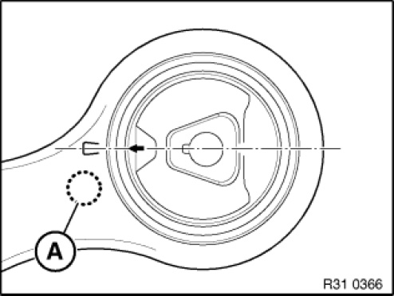
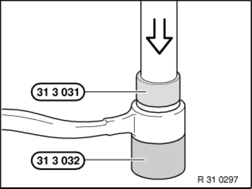
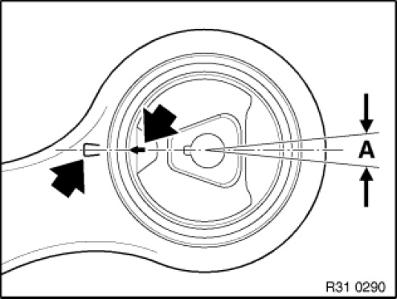
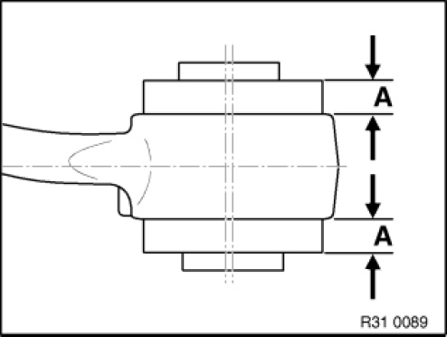

Radius Arm Bushing: Service and Repair
31 12 134 Replacing rubber mount in left or right trailing link
Special tools required:

IMPORTANT: Rubber mounts may only be changed once.
On some models faulty rubber mounts are replaced by hydro mounts.
Procedure remains the same.

Necessary preliminary tasks:
- Check ball joints of trailing links while installed, replace trailing link if necessary
- Remove trailing link

IMPORTANT: If the trailing link already features an identification mark with a centre punch, it is necessary to replace the trailing link.
Mark trailing link with a punch mark in area (A).

Using a press and special tools 31 3 031 and 31 3 032, press rubber mount out of tension strut.
NOTE: Special tool 31 3 031 must be exactly flush with rubber mount bush.

Installation note:
Keep rubber mount and bushing in tension strut clean and free from grease.
Align rubber mount by way of arrow to marking on tension strut and press in. The deviation must not exceed ± 5°.

Installation note:
Protrusion (A) equally large.